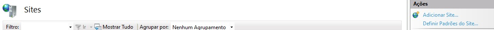

Por já ter vários tutoriais prontos na internet sobre como ativar essa função no Windows, vou poupar a explicação e recomendar seguir esse tutorial: Link
Confira o Download no site da Microsoft: Link
Para adicionar um novo Pool de Aplicativo, abra o IIS e clique com o botão direito em "Pools de Aplicativos" e selecione "Adicionar Pool de Aplicativos".
Versão do .NET CLR 4.*
Para adicionar um novo Site, abra o IIS e clique com o botão direito em "Sites" e selecione "Adicionar Site".
Nome do Site: OffshoreTrack
Pasta Física: Coloque o caminho da pasta onde o sistema está
Defina a porta que o sistema vai acessar
Garanta que todos tenham acesso a pasta.